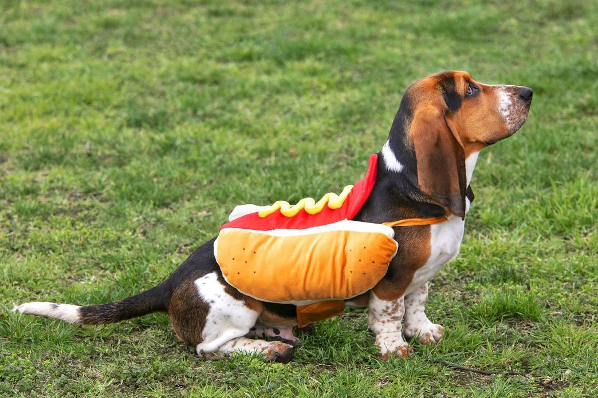

Min nettside
Hei og velkommen til min nettside. Denne har som mål å informere deg om UU, SEO og CMS. Dette leser du om i artikklene til høyre, men det finnes også knapper til disse sidene i navigasjons-baren.
Ønsker du å kontakte oss, har du kontaktinformasjon helt neders på alle sider. Der er det også lagt til våre Facebook, Twitter og Instagram sider nederst i alle våre sider, dersom du ønsker å kontakte oss via sosiale medier. Det finnes også en kontaktside helt til venstre i navigasjonsbaren med alt du trenger av informasjon, og til og med et kart og kontaktskjema.